WWDC 2023: What’s new in SF Symbols 5
Find hereafter a detailed summary of a video that belongs to a taxonomy of some WWDC footages.
The original video is available on the Apple official website (session 10197).
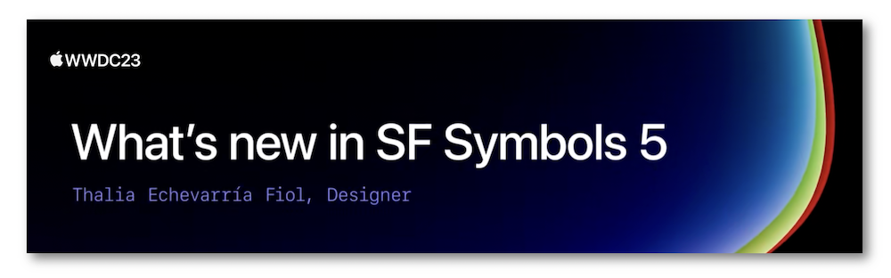
"Explore the latest updates to SF Symbols, Apple's library of iconography designed to integrate seamlessly with San Francisco, the system font for Apple platforms. Learn about symbol animations: a collection of expressive, configurable animations that can make your interface feel more lively and improve user feedback. See how to draw for animation when creating your own custom symbols, and discover the latest additions to the SF Symbols library."
Hereafter, the underlined elements lead directly to the playback of the WWDC video at the appropriate moment.
Animation #
Through the years, the symbols have known many enhancements to lead to the brand new animation feature in 2023.
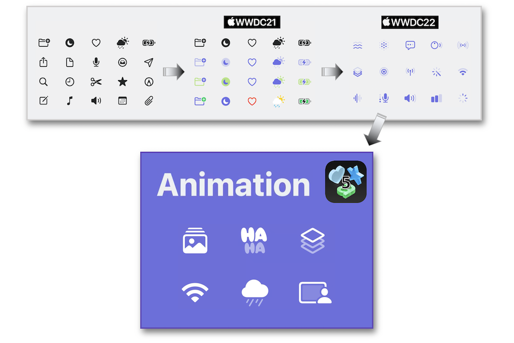
Before diving deeper into this new feature, there are two concepts to be aware of.
The symbol layers #
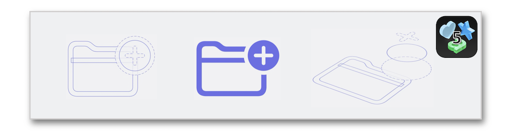
Based on this notion, an alternative is animating the whole symbol or animating by layer according to the use case.
The space in animation #
This concept is crucial to provide an optic depth to a symbol.
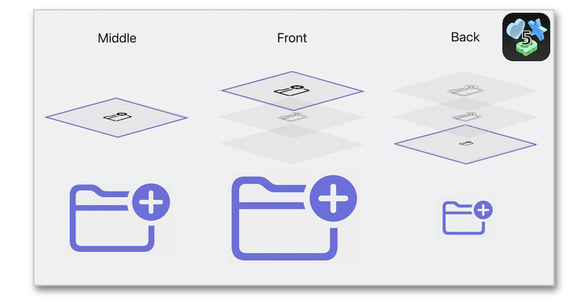
The animation library #
This library provides some configurable presets to drive a full realization of the SF Symbols 5 animation feature:
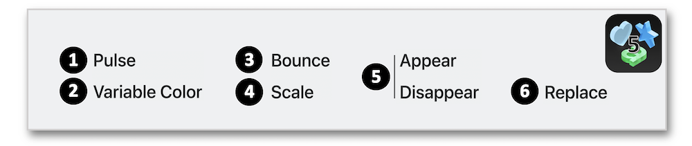
🎬
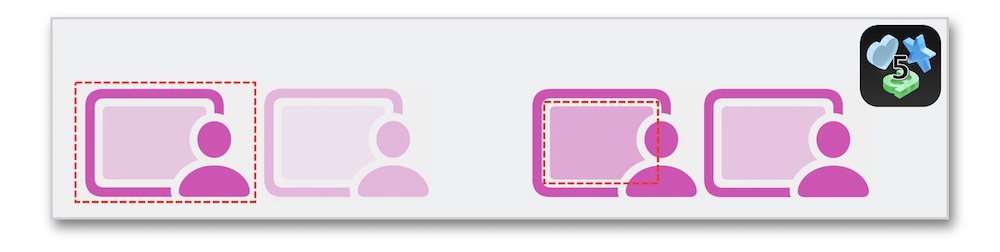
The opacity variations give rise to a sense of activity through the whole symbol or just a part of it.
🎬
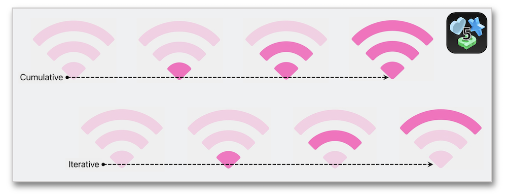
The variable color animation is represented via two different ways that can be applied according to the use case (Wi-Fi search and connection for instance).
🎬
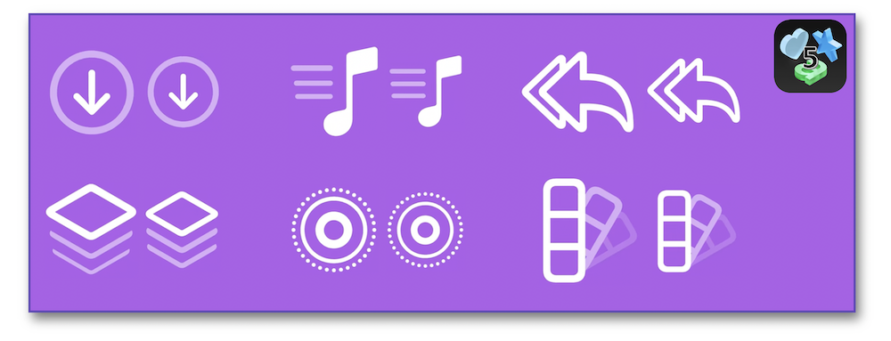
This type of animation may be used for offering a visual feedback, indicating a successful action or just pointing out that an action has taken place through a sense of energy.
🎬
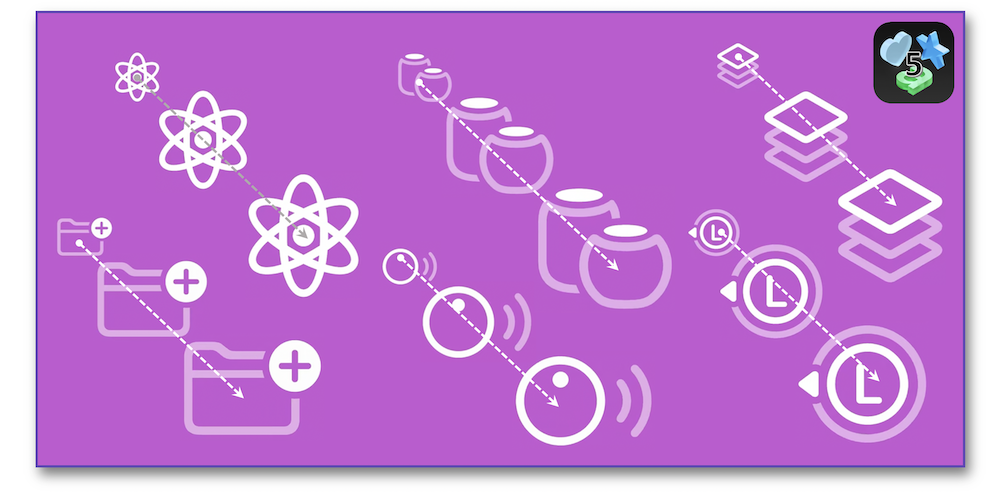
Besides informing that an action has taken place, according to the scale up or down and the potential persistence of this scale, the scale animation may be used to highlight the importance of an element, to indicate the symbol has been pressed or simply provide focus to it.
🎬
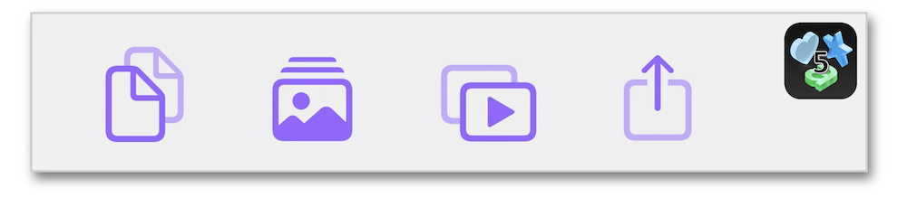
The main goals of this animation rely on capturing attention and being notified about a special event regarding the symbol's meaning.
🎬
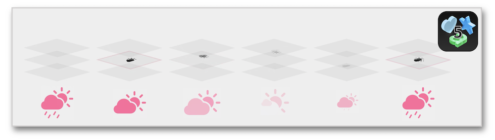
Based on the concept of directionality, the major objective of this animation highlights some functionality modifications through the symbol's state.
Drawing for animation #
After creating the shapes using vector drawings, it's essential to separate the elements that will be part of the potential different animations.
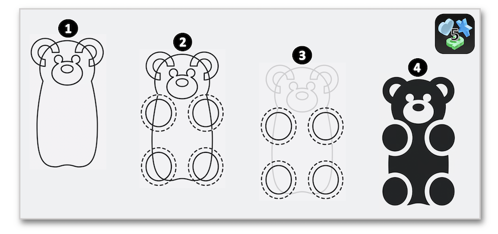
Once in the SF Symbols app, the symbol's layers are annotated to define the proper animations.
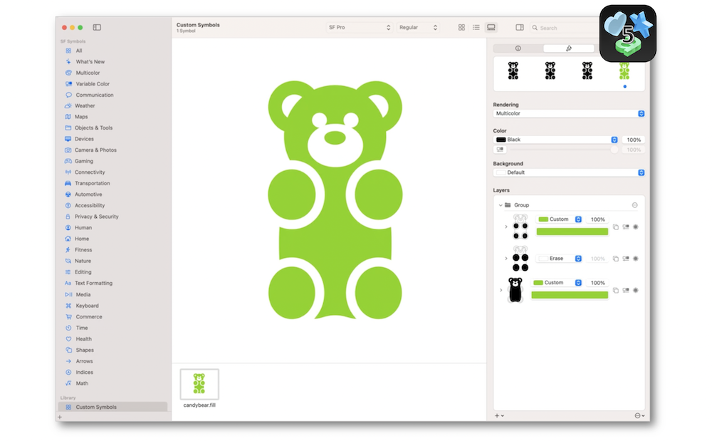
Then, animation presets can be visualized even with no erase layers to be involved but, in this case, the result will be different.
New symbols #
Many categories (Automotive, Gaming, Weather...) have been expanded through the new additions in SF symbols 5.
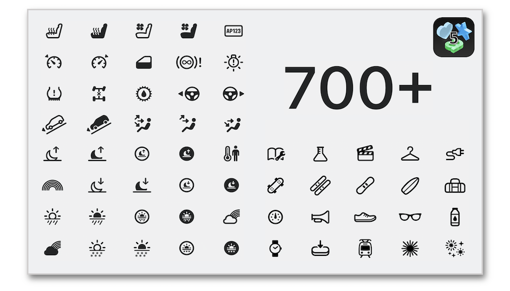
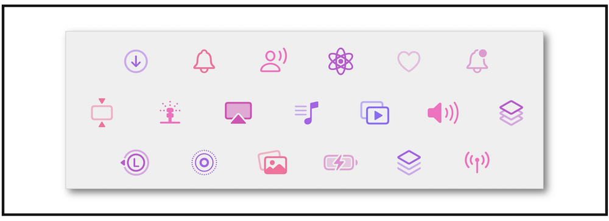